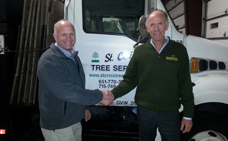
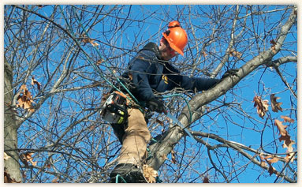
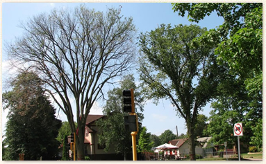

East Metro: 651.770.3744
West Metro: 952.881.3779
Wisconsin: 715.749.3475
Exciting News

After much thought, we have decided to join forces with SavATree. We felt it was the best way to facilitate the growth of our team, while continuing to provide the best possible service to our customers. Rest assured you will continue to receive the same personalized service from the same arborists and field specialists that have been servicing your property all along.
Read more
Fall
As the temperatures decline and most trees begin to shut down, it is time to think about pruning. Trees should be pruned to remove dead, dying, damaged, diseased and hazardous branches as well as training them to grow properly. Fall and winter are the only time that certain trees should be pruned. Contact one of our certified arborists for a free estimate regarding your pruning needs.
Spring
There are many different insects and diseases that affect the health and beauty of our trees. Most of these issues can be prevented or cured if treated properly. Timing of treatments is extremely important. Please contact one of our certified arborists to ensure that your trees stay healthy and beautiful.
Summer
Oak wilt, Dutch elm disease, and Emerald ash borer will kill thousands of trees this year. If you notice any of your trees appearing to die back or if the leaves are wilting and turning brown, please contact one our certified arborists for a closer evaluation. Depending on the situation, some trees can be saved and others may need to be removed. Contact One of Our certified specialists today to learn more.
Winter
Once the ground freezes, we are able to bring in larger equipment to remove trees more efficiently and cost effectively. At the same time this protects our customers property. This becomes especially important while working on golf courses or nice manicured lawns. Please contact one of our certified arborists for a free estimate on how to best remove trees that should be removed.
Why SavATree?
With a dedicated team of highly trained experts that are passionate about trees, have similar core values to ours, and place great emphasis on high-quality service — SavATree was a logical choice for us. SavATree has been caring for thousands of properties for over 25 years and has built a reputation for excellence among their clients.
SavATree and St. Croix Tree Service . . . a perfect combination!
Quick Links
Request an Estimate


© 2011 - St. Croix Tree Service, 675 Grupe Street, Roberts, WI 54023
Designed by Lackey Designs